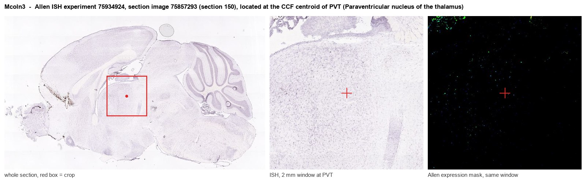
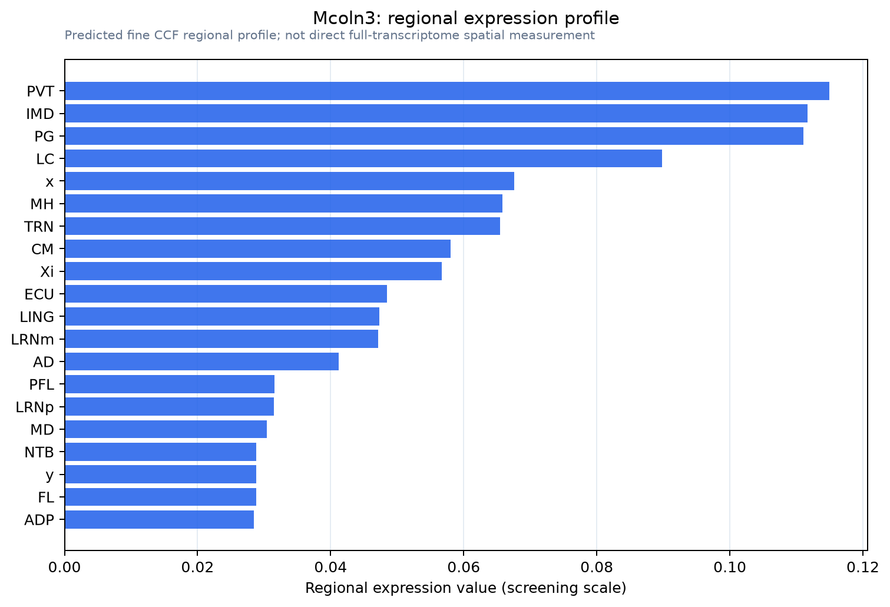

Mcoln3
Mucolipin-3 (Transient receptor potential channel mucolipin 3) (TRPML3)
Spatial tier: RESTRICTED · Class: ION_CHANNEL · Top region: PVT (Paraventricular nucleus of the thalamus) · Positive regions: 21/554
48.9Discovery Score
35.2Targetability Score
CEvidence grade C
What this means: Mcoln3: fine CCF profile is restricted toward PVT (top regions: PVT, IMD, PG, LC, x; 21 positive regions); direct spatial validation is still required.
Function in PVT: evidence, prediction, innovation
- Gene function
- Mcoln3 encodes TRPML3 (mucolipin-3), a calcium-permeable non-selective cation channel of the TRP superfamily that sits mainly in endosomal and lysosomal membranes and transiently in the plasma membrane. It controls luminal calcium release, organelle acidification and membrane fusion, and therefore endolysosomal trafficking and autophagy. The gain-of-function A419P allele holds the channel constitutively open and causes the deafness and coat-pigmentation defects of the varitint-waddler mouse.
- Region function
- The paraventricular nucleus of the thalamus is a midline thalamic hub that integrates arousal, circadian and stress signals and projects densely to nucleus accumbens, amygdala and prefrontal cortex, where it assigns motivational salience to cues.
- Published in this region
- inferred No region-specific literature found. TRPML3 has been characterised almost entirely in cochlear hair cells, melanocytes and the endolysosomal system (Kim 2007; Grimm 2007; Nagata 2008; Lelouvier 2011), with no described expression or function in midline thalamus.
- Predicted function
- Prediction: in PVT neurons TRPML3 would most plausibly act inside the cell rather than at the surface, supplying lysosomal calcium release that supports receptor recycling, peptide-vesicle handling and autophagic turnover in a nucleus that undergoes strong activity-dependent remodelling during chronic stress and drug withdrawal. Constitutive knockout should therefore give a mild baseline phenotype but an exaggerated loss of PVT drive after repeated stress. Conversely, virally expressing the gain-of-function varitint-waddler channel in PVT would depolarise and eventually kill these neurons, mimicking a PVT lesion with reduced cue-driven seeking and blunted withdrawal-related anxiety.
- Innovation
- ★★★★★ 5/5 An endolysosomal channel has never been examined in the PVT even though lysosomal calcium signalling is a plausible substrate for stress-induced plasticity there.
- Tools
- Varitint-waddler (Mcoln3 Va) and Mcoln3 knockout mice; TRPML agonists ML-SA1 and SN-2 and inhibitor ML-SI3; anti-TRPML3 antibodies; no Mcoln3 driver line, but PVT is routinely reached with retro-AAV from nucleus accumbens or with Vglut2-IRES-Cre (JAX 028863).
- References
Direct evidence located at the region

Allen ISH experiment 75934924, section image 75857293 (section 150): the section that contains the CCF centroid of Paraventricular nucleus of the thalamus according to the Allen image-to-atlas alignment (reference_to_image), with a 2 mm window around that point. Left: whole section, red box = window. Middle: ISH signal. Right: Allen's expression-mask view of the same window. open this image in the Allen viewer
Look it up yourself: Allen Mouse Brain ISH for Mcoln3Allen reference atlas: PVT (structure 149)ABC Atlas MERFISH viewer(in the ABC Atlas choose dataset MERFISH-C57BL6J-638850-CCF, colour cells by gene "Mcoln3" or by parcellation_substructure "PVT")All genes confined to PVT + 3-D brain
Direct spatial evidence
MERFISH REGION LOCATOR

Regional expression figure

Predicted WMB × fine-CCF profile; not direct full-transcriptome spatial measurement.
Spatial profile
Evidence and specificity
- Evidence status
- PREDICTED_FINE
- Direct sources
- None; predicted localization only
- Exclusive threshold
- 12 positive regions out of 554
- Spatial specificity
- 0.355
- Top-region fraction
- 0.065
- Filter status
- PASS
Interpretation limits
- Cell-type-to-region projection is imputed expression, not direct spatial measurement.
- Adult reference atlases do not establish stability across age, sex, strain, state, or disease.
- Transcript abundance does not guarantee protein abundance or genetic-tool performance.